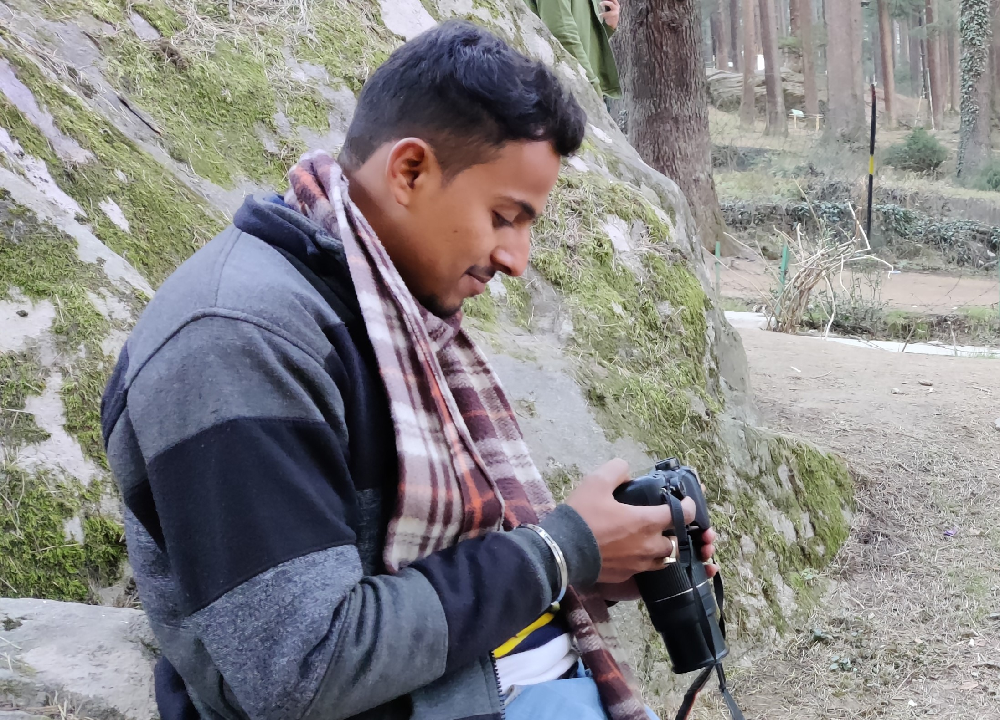

Shyam Sagar Singh Choudhary



I'm a B.tech CSE Graduate (2022) & Upcoming Full Stack Solution Architect The crossover between design and programming has always been of interest to me, I've been lucky enough to learn & work alongside Aakash Sir. I have knowledge of some very popular skills that include JAVA , design (working closely with designers), front-end development (React, ReactJs, HTML5, CSS3, Javascript, Responsive UX). I have been working mostly on Windows and sometimes on linux.